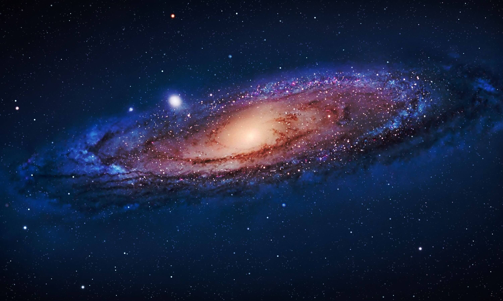
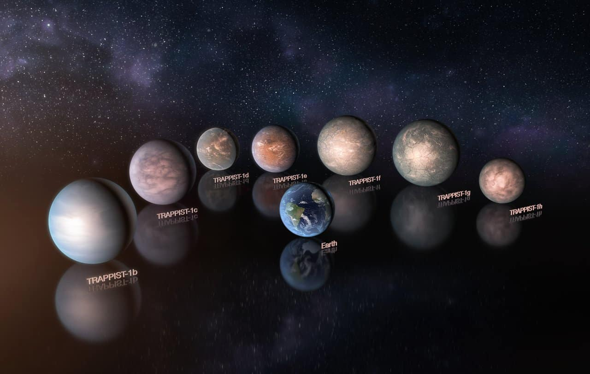

Солнечная система
5 февраля 2026
8 планет Солнечной системы по порядку.
Коллекция изображений по теме: Космос
5 февраля 2026
8 планет Солнечной системы по порядку.

5 февраля 2026
Это гигантское межзвездное облако и область активного звездообразования, расположенная в созвездии Стрельца.

5 февраля 2026
Галактика, в которой мы живем.

5 февраля 2026
Ближайшая галактика к нашей галактике.

5 февраля 2026
Это удивительный космический объект, расположенный в созвездии Стрельца. Название «Тройная» предложено астрономом Уильямом Гершелем, так как темные полосы космической пыли визуально разделяют светящуюся туманность на три лепестка.

5 февраля 2026
Это реальная планетная система у ультрахолодного красного карлика в созвездии Водолея, расположенная примерно в 40 световых годах от нас. На картинке представлена художественная визуализация всех её семи планет, а Земля помещена в центр исключительно для наглядного сравнения их размеров.